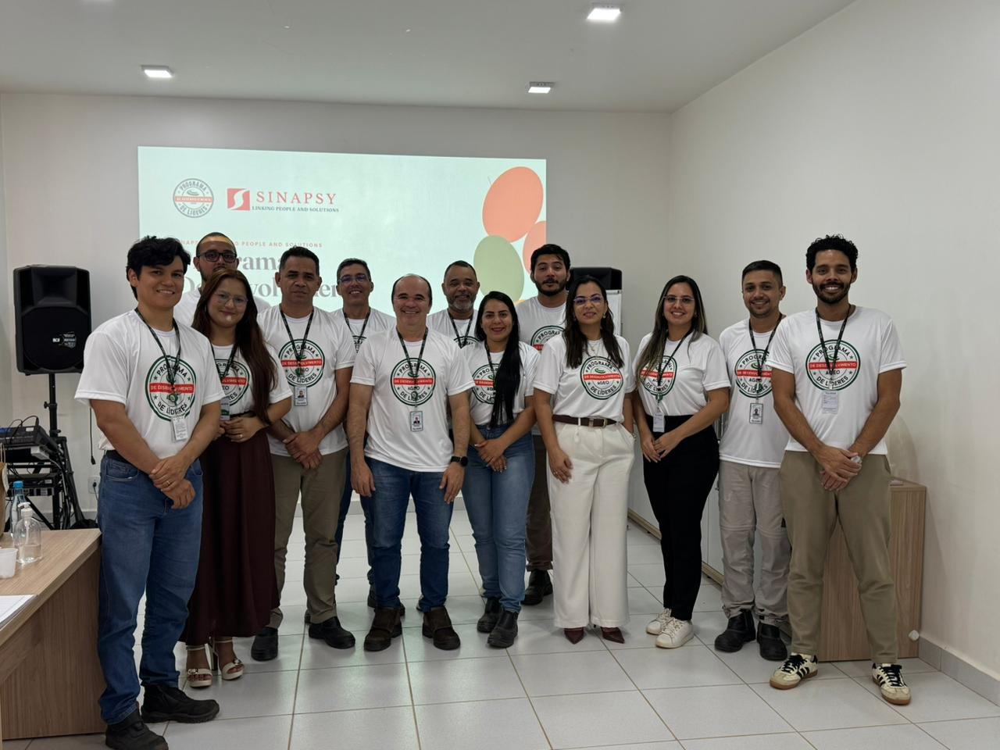

Relatório consolidado dos dois últimos encontros — leitura dos indicadores de clareza, aplicação prática e evolução da liderança.
Cada encontro reuniu 11 líderes. A adesão às pesquisas de avaliação foi alta e crescente entre o primeiro e o segundo encontro.
O aumento da adesão de um encontro para o outro é, por si só, um sinal de engajamento: os líderes passaram a ver valor em responder e acompanhar a própria evolução.
“De 0 a 10, o quanto este treinamento foi claro e facilitou o seu entendimento sobre os temas abordados?”
“O que você mudaria ou adicionaria ao conteúdo para torná-lo ainda mais útil para o seu dia a dia?” — as respostas se organizam em três frentes:
Entre os 9 líderes que responderam, o alinhamento foi total nas três perguntas-chave do segundo encontro.
Notaram mudança na mentalidade ou atitude como líder desde o treinamento anterior
Sentem-se preparados para o Plano de 30 dias e para aplicar as mudanças já na próxima agenda
Ficaram sem dúvidas sobre o conteúdo ou sobre como aplicá-lo na rotina de liderança
“Desde o treinamento passado, você notou alguma mudança na sua mentalidade ou atitude como líder no dia a dia?”
“Sim, mudei a forma de ver o processo e as pessoas como o todo.”
“Sim, com certeza! Estou colocando em prática e aprendendo diariamente.”
“Acreditar mais em meus liderados.”
“Sim, meu envolvimento com a equipe.”
Os depoimentos revelam uma transição concreta de gestor de tarefas para líder de pessoas: visão mais sistêmica (“ver o processo e as pessoas como um todo”), maior confiança nos liderados e envolvimento ativo com a equipe.

Nós acreditamos no poder do crescimento conjunto entre empresa e colaborador. Por isso, buscamos dar o suporte necessário para o sucesso de todos os liderados.